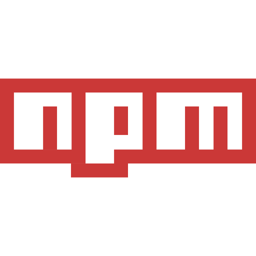

Technical Skills
I have a strong foundation in web development and programming,
with hands-on experience in both front-end and back-end
technologies.
I am passionate about building clean, efficient, and scalable
applications,
and continuously expanding my skill set to stay up-to-date with the
latest tools and frameworks.

HTML
I use HTML as the backbone of every web project to craft clean
and well-structured layouts. It allows me to organize content
effectively and build semantic, accessible web pages that are
easy to maintain and scale.

CSS
I use CSS to bring life to web pages with beautiful, responsive,
and user-friendly designs. From Flexbox and Grid to animations,
I ensure every interface looks polished and works seamlessly
across devices.

JavaScript
JavaScript is my go-to for adding interactivity and dynamic
behavior to websites. I build powerful front-end logic and
enhance user experiences with clean, efficient, and maintainable
code.

React.js
I use React to develop fast, scalable, and modular user
interfaces. With its component-based architecture, I build
responsive SPAs and deliver seamless user experiences.

Node.js
With Node.js, I develop efficient and scalable backend services.
It enables me to build APIs, handle real-time data, and power
full-stack JavaScript applications.

PostgreSQL
I work with PostgreSQL to design robust, relational databases
that ensure data integrity and performance for complex web
applications.
NPM
I leverage npm to manage project dependencies and integrate
powerful tools and libraries into my development workflow.

Git
Git is an essential part of my workflow for version control. It
allows me to track changes, collaborate effectively, and
maintain clean codebases.

GitHub
I use GitHub to host repositories, manage projects, and
collaborate with other developers through pull requests and
issue tracking.

Bootstrap
I use Bootstrap to quickly prototype and build responsive
designs with a consistent and mobile-first approach.

Tailwind CSS
Tailwind CSS is my preferred utility-first framework for
creating custom, modern, and highly responsive designs with
minimal code.
TypeScript
I use TypeScript to write safer and more maintainable JavaScript
code with static typing, enabling me to catch errors early and
build robust applications.

Nest.js
With NestJS, I develop scalable and maintainable server-side
applications using a modular architecture and TypeScript.
Next.js
Next.js allows me to build optimized, production-ready React
applications with server-side rendering, API routes, and great
SEO support.